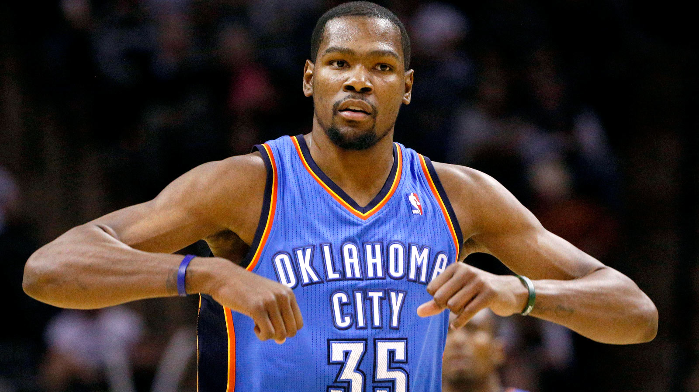
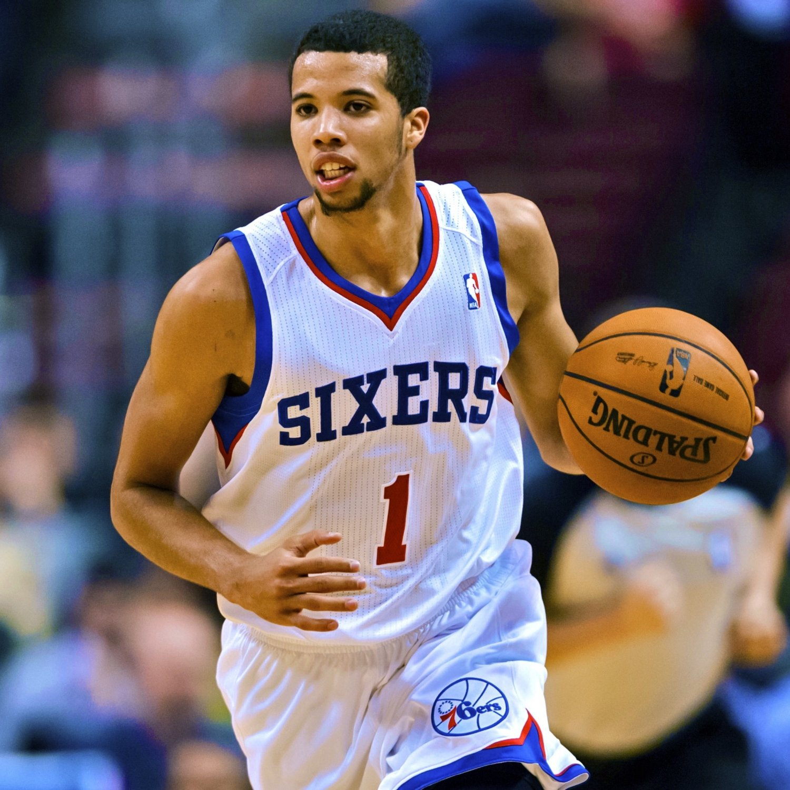
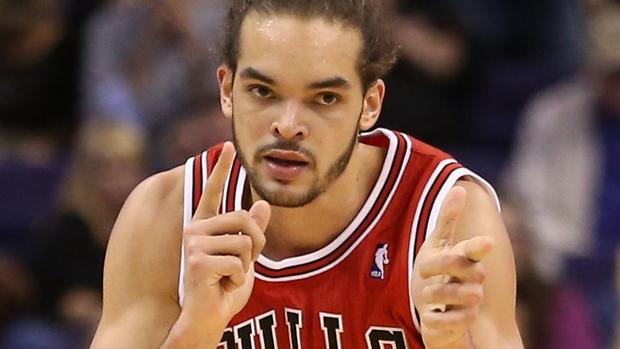
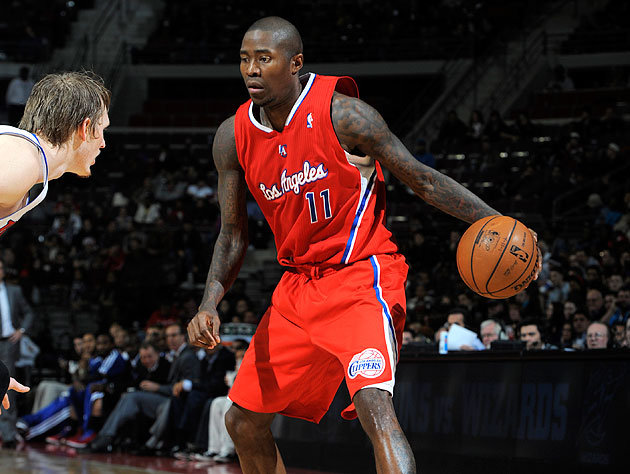
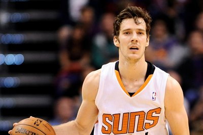
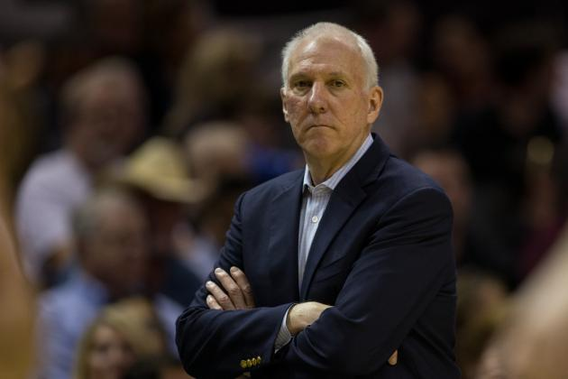

Máximos anotadores
Kevin Durant
Kevin Durant de los Oklahoma City Thunders fue el máximo anotador de la temporada pasada promediando 32 puntos por partido.

Máximos reboteadores
Deandre Jordan
Deandre Jordan de Los Angeles Clippers fue el máximo reboteador de la temporada pasada promediando 13.5 rebotes por partido.

Máximos asistentes
Chris Paul
Chris Paul de Los Angeles Clippers fue el máximo asistente de la temporada pasada promediando 10.7 asistencias por partido.

Líderes en robos
Chris Paul
Chris Paul de Los Angeles Clippers fue el que más robos promedió la temporada pasada con 2.4 robos por partido.

Máximos taponadores
Anthony Davis
Anthony Davis de los New Orleans Pelicans fue el máximo taponador de la temporada pasada promediando 2.8 tapones por partido.

Líderes en dobles-dobles
Kevin Love
Kevin Love de los Cleveland Cavaliers fue el que más dobles-dobles promedió la temporada pasada.

MVP de la Temporada
Kevin Durant
Tras su perfecta temporada, Kevin Durant logró cortar la racha de MVP's consecutivos que tenía Lebron James recibiendo el galardón individual más importante, el MVP.
Rookie del Año
Michael Carter-Williams
A pesar del bajo nivel de los Rookies en la temporada 2013-14, Michael Carter-Williams demostró con creces ser el mejor de los Rookies y nos brindo un nivel aceptable.
Mejor Defensor
Joakim Noah
El pivot de los Bulls volvió a demostrar la pasión que siente por este deporte dándolo todo a nivel defensivo y siendo crucial para los Bulls con sus aportaciones tanto defensivas como colectivas.
Mejor Sexto Hombre
Jamal Crawford
El escolta de los Clippers volvió a brillar desde el banquillo y aportó muchos puntos a su equipo haciendo grandes actuaciones tanto en la temporada regular como en los playoffs.
Jugador Más Mejorado
Goran Dragic
A pesar de su gran temporada, Goran Dragic no consiguió ir al All Star Weekend. Pero, podemos decir que se quitó esa espinita al recibir este galardón totalmente merecido.
Entrenador del Año
Gregg Popovich
Como siempre, nuestro amigo Gregg Popovich volvió a demostrar que es el mejor entrenador de la NBA y consiguió que los Spurs ganaran el anillo imponiendo a los Heat de Lebron.
Mejor Quinteto del Año
- Chris Paul (Base)
- James Harden (Escolta)
- Kevin Durant (Alero)
- Lebron James (Ala-pivot)
- Joakim Noah (Pivot)
Mejor Quinteto de Rookies del Año
- Michael Carter-Williams (Base)
- Trey Burke (Base)
- Victor Oladipo (Escolta)
- Tim Hardaway Jr (Escolta)
- Mason Plumlee (Pivot)